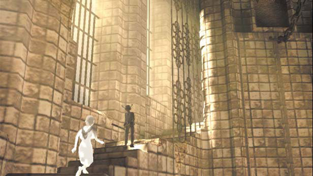
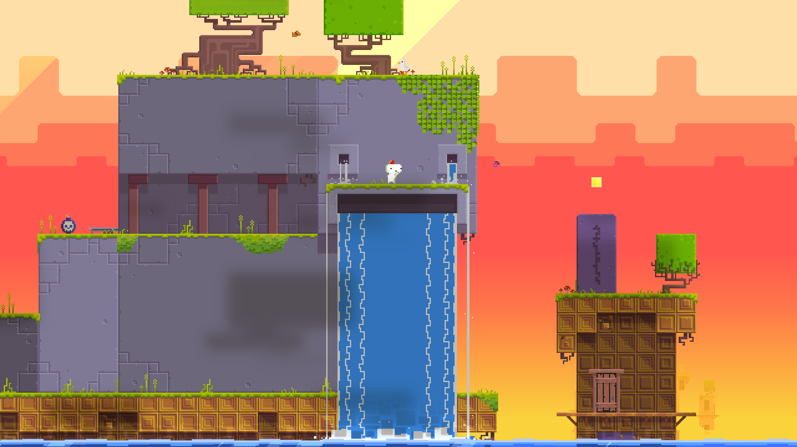

Team Ico was a Japanese video game development studio led by game designer Fumito Ueda. It was part of Sony Interactive Entertainment Japan Studio's Product Development Department #1.
Most importantly, they're the people who developed ICO, and Shadow of Colossus for the PS2, which are some of the most influential games ever created.
The created of Dark Souls, Hidetaka Miyazaki said that "Ico awoke me to the possibilities of the medium" in a Guardian interview.
If you've played either of the games, the first thing you'll notice is just how minimalistic they are. So what is about these humble games that makes them favourites amongst game designers?
In ICO, the whole game revolves around a boy and a girl, you control the boy Ico and help the girl Yorda escape a castle. As you progress you'll have to solve puzzles, and fight shadow enemies using a stick or a sword. The whole game feels quite bare-bones, and at the same time quite unique because games like it didn't exist at the time; there was no Journey or Limbo.
The minimalism was a conscious decision however, a design philosophy Ueda would later call "design by subtraction". When Ico was still being made for the PS1, It had a huge world that included a village and a forest, it had many characters and a complex combat system. These elements were scrapped however, not because of hardware limitation or lack of time, but because those elements didn't reflect the core of the game.
What design by subtraction asks you to do, is to look hard at the game; at it's mechanics and to ask yourself if those mechanics help convey your message. If they don't, then you remove them, no matter how much time you spent because they'll dilute the experience. Does Assassin's Creed really need a tower defense div?
Phil Fish (the designer of FEZ) said that "It gave me the strength to butcher my own game, and every time I did the game got better for it, tighter, more streamlined." in an interview with Gamasutra.
On the other hand, you don't want to go overboard with the philosophy and remove all of the mechanics. The combat in Ico is very simplistic and at times it can get boring. Even Ueda said that if he was to go back he would improve it.
A big part of what made Team Ico games stand out was just how more minimalistic they were compared to others. In a time where every AAA had to have a health system and a progression system, Ico stood out as a game that didn't need these unnecessary features. While I'm not saying that you should go and strip your game down, I think that you should think about all the features in your game and their impact on the game.